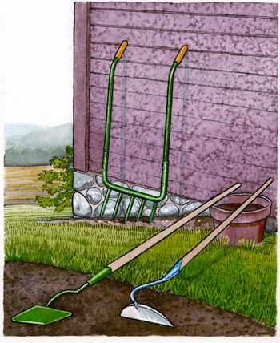

There may be nothing as discouraging as wanting to play in the dirt, only to wear yourself out trying to start the tiller.
Instead of a tiller, I prefer the broadfork. The young folks around here also like this safe, simple tool. To watch them actually want to work the dirt is a beautiful thing. They don’t like to hoe much, but give them the broadfork and you’d better step back to get out of their way.
After all the years here on our little homestead, the one other garden tool that I still regularly rely on is the long handled hoe. I’ve tried many different hoes. Finally, I decided to spring for some expensive tools that seemed as though they might work. The 5 1⁄2-foot swan neck hoe from Gardener’s Supply Co. and Lee Valley’s diamond shuffle hoe stand apart. These gems have saved untold hours of banging and slamming on the dirt to dislodge weeds with old-style hoes.
I am impressed with the quality construction of the swan neck and diamond head hoes. Their handles are heavier and longer than most brands, and really give the leverage needed. The angle and clearance of the swan neck allows deep and easy tillage. The head is high-quality steel and takes a good sharpening, which really works in my sandy soil.
This combination of implements has stood my gardening on its own two feet. There is nothing nicer than getting out in the spring with no noise or pollution while preparing the seed beds and removing weeds.
|
 KRISTIN HURLIN Handtools, such as these hoes and the broadfork, help to loosen the soil and dislodge weeds. |
|
|